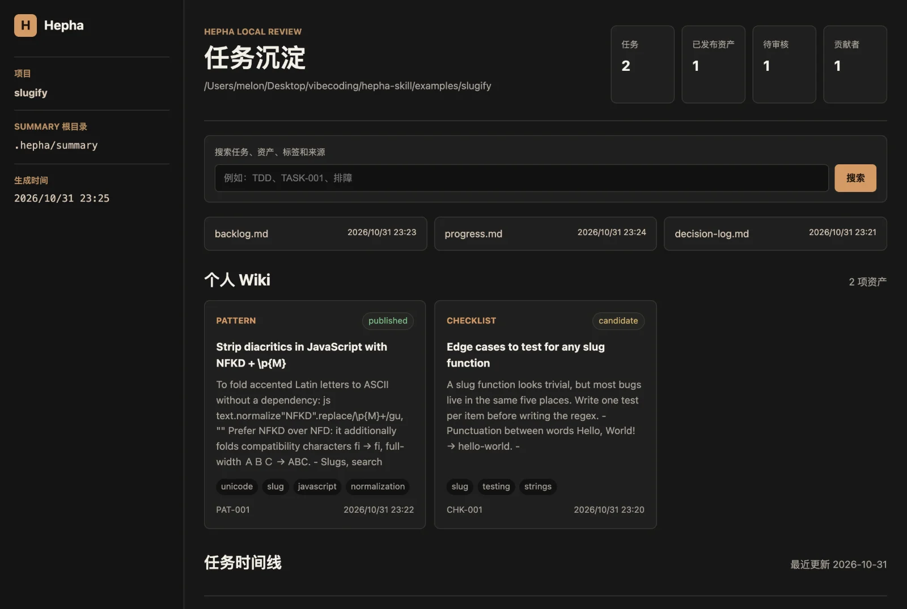
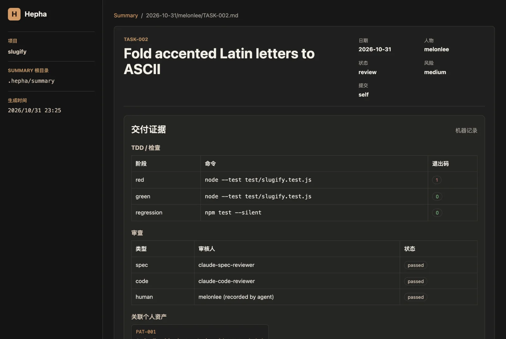
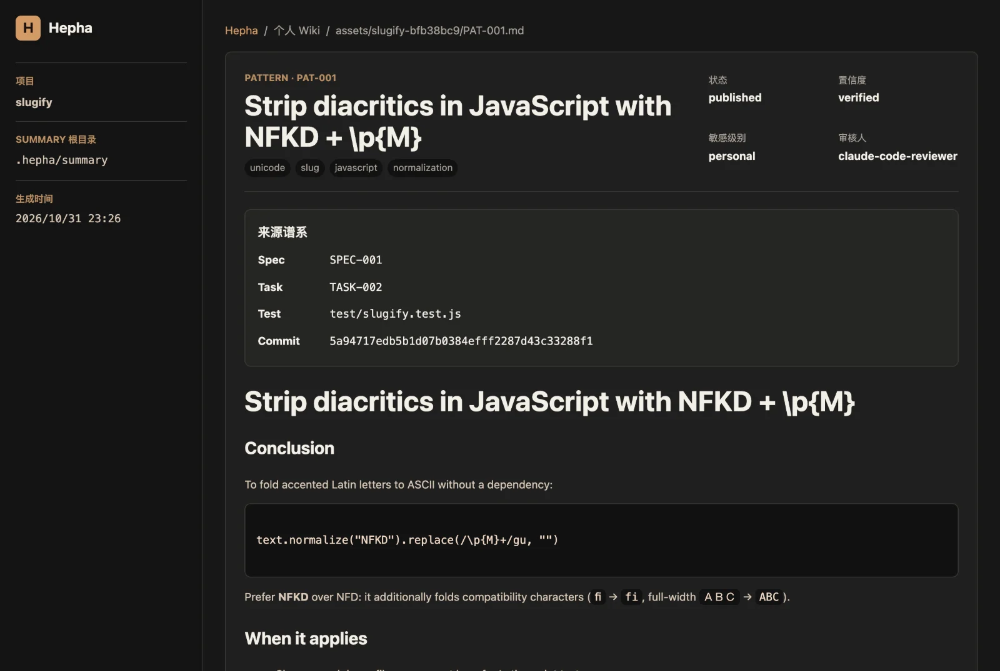
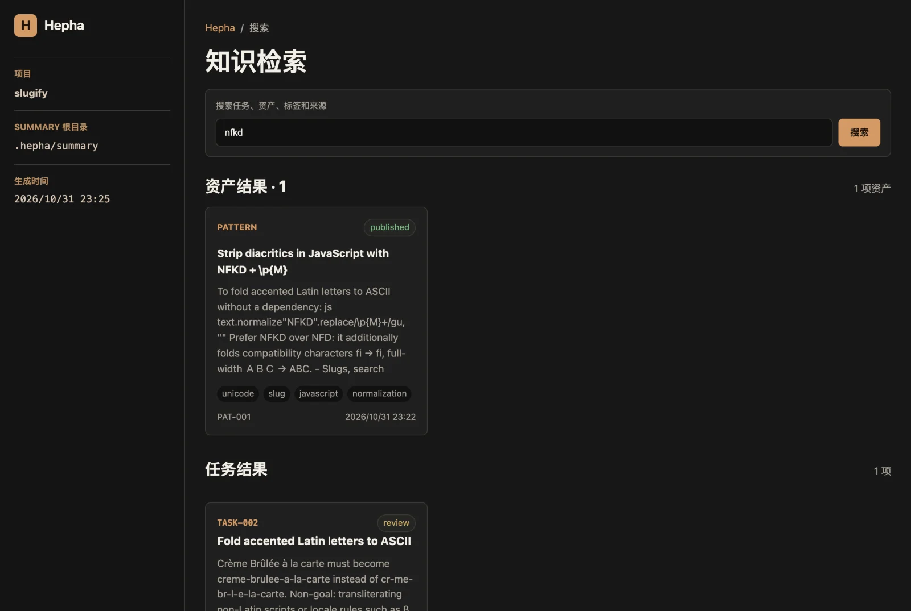

Skill + CLI for Claude Code & Codex
Big requirements in. Small, proven commits out.
Hepha breaks a large requirement into small tasks. A task only counts as done when real RED, GREEN and regression runs and separate Spec, code and human reviews are on record. Reusable conclusions go into your personal engineering Wiki.
- MIT licensed
- Node ≥ 18
- 0 runtime dependencies
- Local-only, no telemetry
- rednode --test test/slugify.test.jsexit 1
- greennode --test test/slugify.test.jsexit 0
- regressionnpm test --silentexit 0
- spec reviewclaude-spec-reviewerpassed
- code reviewclaude-code-reviewerpassed
- humanmelonlee (recorded by agent)passed
“All tests pass” is a claim. Hepha leaves evidence.
A long agent session leaves you with a big diff, a transcript and a confident summary. Afterwards you can only check the diff and what the agent said. Hepha changes what is left on disk: the agent still writes the Spec, the code and the notes, while the CLI runs your test commands, records the results and the reviews, and refuses to move a task forward while evidence is missing.
| After the run, can you check… | One long agent session | A Hepha run |
|---|---|---|
| …what behaviour was agreed? | The prompt, maybe | specs/SPEC-*.md with scenario IDs. Each task has Given/When/Then acceptance criteria, fingerprinted when work starts |
| …that a test failed before the fix? | Only if it happened and you find it in the transcript | evidence/TASK-*.json holds the RED command, its non-zero exit code and output |
| …that tests pass now? | The agent’s statement | GREEN and regression records, plus test_plan.commands you can rerun |
| …that Spec and code were reviewed? | Usually mixed into one pass, or skipped | Separate spec, code and human review records with reviewer and notes |
| …which commit did what? | One large diff | One small commit per task, and assets linked Spec → Task → Test → Commit |
| …what is worth reusing? | Buried in the transcript | A dated summary plus reviewed Wiki assets, searchable across projects |
What Hepha does not do: it cannot judge whether a test is meaningful or a review was thorough. It proves that commands ran with the recorded results and that each review step was explicitly recorded. Treat it as an audit trail and a guard rail, not a substitute for judgement.
One ready task per loop. Every step leaves something the CLI can check.
JSON in .hepha/ is the source of truth; Markdown is the reading layer. The agent calls the CLI to record evidence and to request state changes.
- 01 · plan
SPEC
Goals, non-goals and behaviour scenarios with stable IDs.
specs/SPEC-001.md - 02 · plan
PLAN
Tasks with
spec_refs, Given/When/Then acceptance, risk, test commands and an asset policy.hepha validate - 03 · plan
RESEARCH
Only for a new tool, an architecture change, a security or migration risk, or a real multi-option choice.
decision-log.md - 04 · forge
RED
Write the test first. The CLI executes it, and it must actually fail.
record-check --phase red - 05 · forge
GREEN
The smallest implementation that makes it pass. Command, exit code and output are stored.
--phase green - 06 · forge
REGRESSION
The broader suite still passes after the change.
--phase regression - 07 · temper
REVIEW
Spec review and code review recorded separately, plus human approval by default.
record-review - 08 · record
SUMMARY
A factual summary of what happened in this loop.
summary/<date>/<person>/ - 09 · record
WIKI
Reusable conclusions become candidates, published only after review and a secret scan.
publish-asset - 10 · ship
COMMIT
One small conventional commit per task, then indexes rebuilt and assets synced.
build-index
Gates that refuse
hepha transition enforces todo → doing → review → done (plus blocked / skipped) and checks the recorded evidence at every step. When something is missing it prints why and exits non-zero.
→ doing
Refused unless
- All dependencies are
done. - On entry, the task contract (acceptance, tests, Spec refs, mode, asset policy) is fingerprinted.
→ review
Refused unless
- A failing RED run, a passing GREEN run and a passing regression run are recorded.
- The contract fingerprint is unchanged.
→ done
Refused unless
- Spec review and code review passed.
- Human approval is recorded (unless the manifest sets
approval_required: false). - The summary exists and the asset policy is met.
# GREEN ran before the implementation was saved, so it exited 1
$ hepha transition --root . --task TASK-001 --to review
Hepha: 状态门禁未通过：
缺少 GREEN 通过测试证据
缺少 regression 通过证据
# state gate failed: no passing GREEN evidence,
# no passing regression evidence (exit 1)
# later: asking for done before writing the summary
$ hepha transition --root . --task TASK-001 --to done
Hepha: 状态门禁未通过：
缺少人工批准
缺少任务 summary
缺少资产候选
# missing human approval, task summary
# and asset candidate (exit 1)Real refusals, kept on record
The worked example was built from an empty folder using only the CLI. The gates refused two steps along the way. The failed GREEN run is still in evidence/TASK-001.json, in order:
Evidence is append-only, and the gate reads the latest run. CI re-checks the example’s gates on every run.
CLI messages are currently in Chinese (translated in the comments). Your Specs, summaries and assets can be in any language.
Full or lite
Small, low-risk changes can declare "mode": "lite". The validator only accepts lite with risk: "low" and asset_policy: "none".
| Gate | full (default) | lite |
|---|---|---|
| Spec refs + Given/When/Then | ✓ | ✓ |
| RED + GREEN | ✓ | ✓ |
| Regression run | ✓ | – |
| Spec review | ✓ | – |
| Code review + approval | ✓ | ✓ |
| Summary | ✓ | – |
| Wiki asset | per policy | not allowed |
Contract fingerprint
Entering doing stores a SHA-256 of the task contract. Weaken the acceptance criteria, swap the tests or switch to lite halfway through, and the next gate refuses.
"task_contract_hash": "fa67d99d67793423…f01c04db0f",
"contract_recorded_at": "2026-10-31T15:17:50.211Z"
# if the contract changes after that:
任务契约已变更；请将任务标记 blocked、
记录原因并重新规划，不得静默降低门禁
# contract changed: mark the task blocked,
# record why and re-plan. Do not silently
# lower the gate.Review the run, not the transcript.
hepha-server renders .hepha/ as a local, read-only site: the timeline, every recorded command and review, Wiki cards, search and lineage. These are real screenshots of it running on the worked example.








The review UI labels are in Chinese; your content can be in any language.
127.0.0.1 and sends restrictive security headers.Keep what you learned, with its provenance.
Evidence says what ran. A summary says what happened. A Wiki asset says what to reuse, and where it does not apply. Your personal index tracks where each lesson came from, across projects.
.hepha/evidence/TASK-*.json.hepha/summary/YYYY-MM-DD/<person>/TASK-*.md.hepha/wiki/assets/*.md~/.hepha/wiki/index.jsonLineage you can follow
Assets carry source_specs, source_tasks, source_tests and source_commits. Before the commit exists, an asset uses source_commits: [self]; sync-personal later resolves it to the hash of the latest commit that touched the asset. In the example, PAT-001 resolves like this:
Reviewed before it is reused
Conclusions start as candidates. publish-asset validates the schema and scans for secrets before publishing. Assets marked project-confidential never leave the project.
Clone once. Link the skill. Invoke it.
The skill is never triggered implicitly: you invoke it. The npm package is prepared but not published yet, so install from GitHub.
- One project only (Claude Code): copy
skills/hephainto the project’s.claude/skills/and commit it so your team gets it too. - Guard rule (optional, recommended):
rules/hepha-guard.mdcrestates the hard stops. Copy it to.claude/rules/hepha-guard.md, to.cursor/rules/, or paste it intoAGENTS.mdfor Codex. - Any other agent that can read
SKILL.mdand run shell commands can follow the protocol; the CLI is plain Node.
Install the skill
A personal skill, available in all your projects.
git clone https://github.com/melonlee/hepha-skill.git
cd hepha-skill
mkdir -p ~/.claude/skills && ln -s "$PWD/skills/hepha" ~/.claude/skills/hephaAsk your agent to run it
The agent initialises .hepha/, writes the Spec and a validated backlog, then works one task per loop.
/hepha Build CSV export for the orders page.
Use English for specs and summaries. Ask me before marking any task done.Review what happened
Open http://localhost:3000. The server is read-only and binds to 127.0.0.1.
node ~/.claude/skills/hepha/scripts/hepha-server.js --root . --port 3000Install the skill
A user-level skill for Codex.
git clone https://github.com/melonlee/hepha-skill.git
cd hepha-skill
mkdir -p ~/.agents/skills && ln -s "$PWD/skills/hepha" ~/.agents/skills/hephaAsk your agent to run it
The agent initialises .hepha/, writes the Spec and a validated backlog, then works one task per loop.
$hepha Build CSV export for the orders page.
Use English for specs and summaries. Ask me before marking any task done.Review what happened
Open http://localhost:3000. The server is read-only and binds to 127.0.0.1.
node ~/.agents/skills/hepha/scripts/hepha-server.js --root . --port 3000CLI reference
From a clone, run node skills/hepha/scripts/hepha-cli.js <command>. Every command accepts --root <project>. Environment: HEPHA_PERSON, HEPHA_WIKI_ROOT, HEPHA_PORT, HEPHA_HOST.
| Command | Purpose |
|---|---|
init --requirement "…" [--person NAME] | Create .hepha/, the manifest, an empty backlog and a starter Spec |
validate [--allow-empty] | Check backlog schema, Spec references, modes and the dependency DAG |
record-check --task T --phase red|green|regression|lint|build|browser --command "…" | Run the command and record its exit code and output. RED must fail; the other phases must pass |
record-review --task T --type spec|code|human --status passed|failed|changes-requested | Record a review, with optional --reviewer and --notes |
transition --task T --to doing|review|done|blocked|skipped | Change state if the gates pass |
publish-asset --file .hepha/wiki/candidates/X.md [--reviewer N] | Validate, scan for secrets and publish a Wiki asset |
build-index | Rebuild the task and asset indexes |
sync-personal [--wiki-root DIR] | Copy published, non-confidential assets to the personal Wiki |
version | Print the version |
hepha-server [--port 3000] [--host 127.0.0.1] [--wiki-root DIR] | Read-only local review UI |
Narrow on purpose.
Hepha borrows the Spec-first and TDD discipline popularised by Superpowers and Spec Kit. All three are useful and solve different problems. Based on their READMEs as of October 2026; corrections are welcome.
| Aspect | Superpowers | Spec Kit | Hepha |
|---|---|---|---|
| What it is | A methodology delivered as a library of composable skills (brainstorming, plans, worktrees, subagent-driven development, TDD, code review…) | An open source toolkit with a Python CLI (specify), templates and agent commands for SDD, bug fixing and idea assessment | One delivery skill + one guard rule + a zero-dependency Node CLI |
| Scope | Broad SDLC coverage, many harnesses | Many processes and agents; extensions, presets, workflows and catalogs for teams | Deliberately narrow: one loop for one person’s delivery |
| Install | Plugin marketplaces (Claude Code, Codex, Cursor, Gemini CLI, …) | uv tool install specify-cli | Symlink or copy a folder (npm package prepared, not yet published) |
| Where enforcement lives | Skill instructions that trigger automatically | Commands, templates and optional extension gates | A CLI state machine that reads recorded evidence and exits non-zero when it is missing |
| Test evidence | TDD skill: watch the test fail, then pass | Depends on the chosen process / extensions | RED/GREEN/regression command, exit code and output stored per task |
| Knowledge capture | Design docs and plans | Specs, plans and tasks as Markdown artifacts | Summaries + reviewed Wiki assets with Spec/Task/Test/Commit provenance, synced across projects |
| Review surface | Your agent / PRs | Your agent / generated artifacts | Local read-only HTML: timeline, evidence, search, lineage |
Rough guide: pick Superpowers for a broad, auto-triggering skill set across many agents. Pick Spec Kit for team-wide, customisable spec-driven processes. Pick Hepha for a small, auditable loop where “done” means the evidence is on disk, plus a personal knowledge trail. You can combine Hepha with either of them.
Questions, answered plainly.
Does this slow the agent down?
Yes, somewhat. Writing a failing test first and recording two reviews costs time. Lite mode exists for the small changes where that cost isn’t worth it. Hepha is meant for work where finding a bad change late costs more than the extra steps.
Can’t the agent just fake the evidence?
record-check runs the command itself and records the real exit code, and the gates read those records. Nothing stops a determined agent from editing the JSON directly, so the evidence is only as trustworthy as your process. The guard rule forbids hand-editing it, and you can rerun every recorded command. Hepha makes cutting corners visible and costly. It cannot make it impossible.
Which agents does it work with?
It’s built for Claude Code and Codex, which both have native skill folders. The CLI is plain Node, so any agent that can read SKILL.md and run shell commands can follow the protocol.
Why are the CLI messages and templates in Chinese?
The skill started as Chinese-first for its author’s team. Specs, summaries and assets can be written in any language; the worked example is in English. Localising the CLI messages is on the wish list, and PRs are welcome.
Does it commit or push for me?
The skill asks for one small conventional commit per task, following the commit policy you approve. Human approval is required by default. The CLI itself never commits. Its only git calls are read-only: git config user.name (default person name) and git log (to resolve self commit references).
Where does my data go?
Nowhere. Everything lives in .hepha/ in your project and, if you sync, in ~/.hepha/wiki. The review server only binds to localhost, accepts only GET/HEAD and sends restrictive security headers.

Make “done” mean the evidence is on disk.
Read the worked example end to end, or install the skill and run your next requirement through the loop.